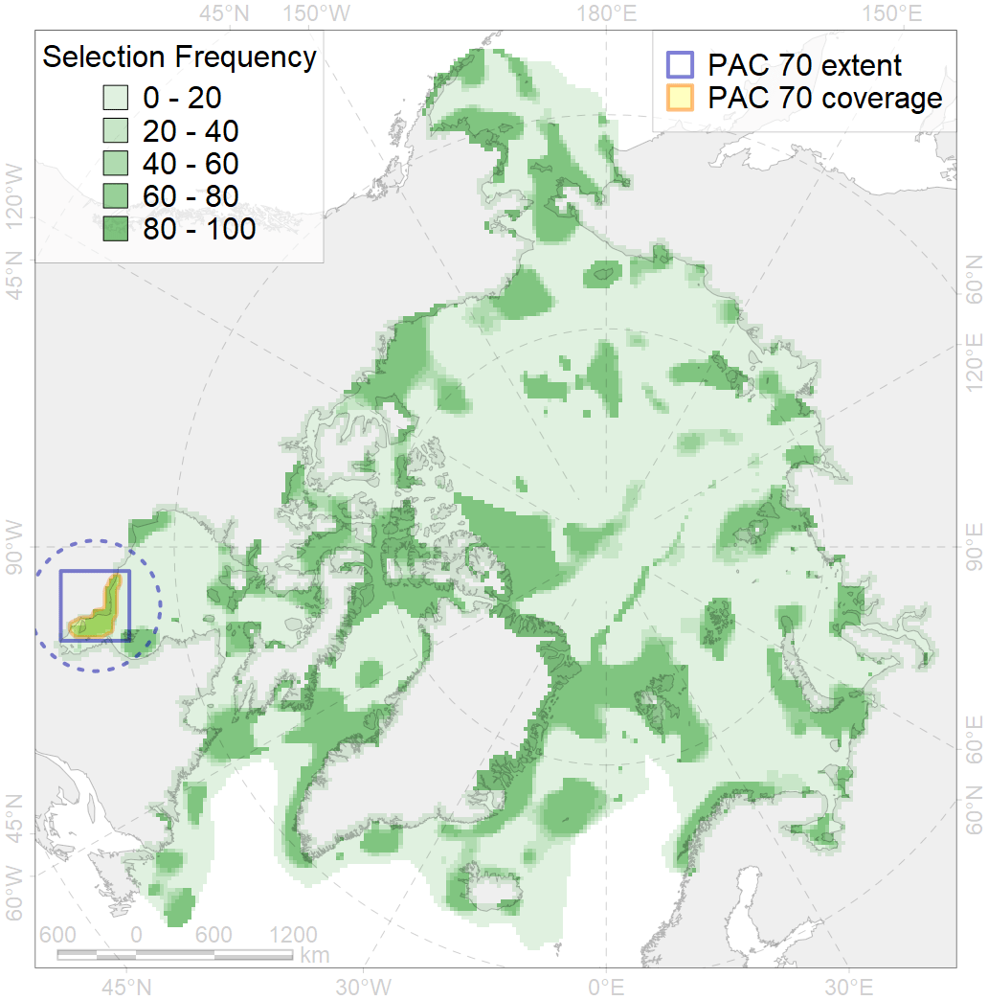
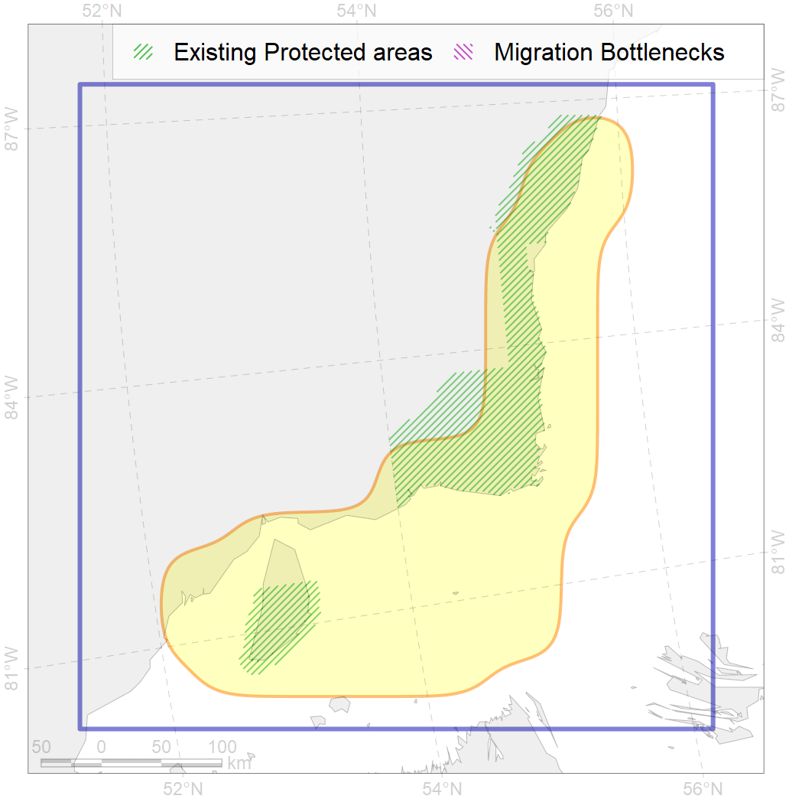

70
For more information regarding this PAC and to conduct custom spatial analysis using the PAC data or any spatial query, please consult Accenter.

0
CFs entirely within the PAC area
7
CFs at least 25% within the PAC area
4
CFs with at least 50% of their target achieved in the PAC
9
CFs with at least half of their target achieved in the PAC
| CF ID | CF Name | Proportion in the PAC | Conservation Target | Contribution to ArcNet Target Achievement | PAC’s Contribution to the Achieved Target |
|---|---|---|---|---|---|
| 5025 | Beluga of the James Bay summer core distribution | 68.2% | 72.0% | 93.9% | 90.1% |
| 9035 | polar bear denning areas of SH (Southern Hudson Bay) subpopulation | 67.1% | 64.8% | 100.4% | 85.7% |
| 5024 | Beluga of the James Bay summer distribution | 51.7% | 48.0% | 93.5% | 91.3% |
| 5026 | Beluga of the James Bay winter distribution | 51.7% | 48.0% | 98.2% | 86.4% |
| 6064 | Common eider (Somateria mollissima sedentari) Hudson Bay breeding&moulting grounds | 30.8% | 55.2% | 49.7% | 49.2% |
| 3129 | Polynyas distribution in the Eastern Hudson Bay region | 28.9% | 12.0% | 175.5% | 77.7% |
| 7030 | James Bay enclave | 25.9% | 18.9% | 120.6% | 41.1% |
| 9017 | polar bear of the SH (Southern Hudson Bay) subpopulation distribution | 23.8% | 32.4% | 69.3% | 58.9% |
| 7168 | IV.2.1. shallow James Bay | 23.1% | 6.1% | 335.0% | 39.7% |
| 8024 | intertidal zone of the Hudson Bay LME | 21.7% | 28.0% | 44.7% | 38.7% |
| 5031 | Beluga of the Western Hudson Bay summer distribution | 15.1% | 48.0% | 27.2% | 26.5% |
| 8037 | Salt marshes of the Hudson Bay LME | 14.5% | 30.0% | 41.8% | 29.7% |
| 4007 | Feeding/nursery area of the Cisco (Coregonus artedi) | 10.8% | 32.4% | 29.6% | 20.8% |
| 4031 | Feeding area of the Brook Trout (Salvelinus fontinalis) | 8.9% | 14.4% | 52.8% | 21.9% |
| 8020 | Hudson Bay estuaries | 6.6% | 50.0% | 7.4% | 6.6% |
| 4011 | Feeding area of the Lake whitefish (Coregonus clupeaformis) | 5.1% | 38.4% | 11.1% | 10.6% |
| 2010 | Bearded seal whelping areas in the Hudson Bay | 5.0% | 24.0% | 18.5% | 18.5% |
| 4075 | Fish zoogeography, Arctic Region, High-Arctic Shelf Province, Hudson District | 4.5% | 9.0% | 44.4% | 15.9% |
| 2048 | Ringed seal whelping areas in the Hudson Bay area | 4.5% | 24.0% | 16.5% | 15.5% |
| 3035 | Marginal Ice Zone distribution in July in the Hudson Bay LME | 4.1% | 24.0% | 15.1% | 10.6% |
| 4035 | Feeding area of the Lake trout (Salvelinus namaycush) | 3.1% | 14.4% | 14.5% | 5.9% |
| 2019 | Harbour seal range in the North Atlantic region | 2.9% | 6.0% | 43.0% | 6.5% |
| 7028 | Hudson Bay enclave | 1.9% | 9.2% | 18.8% | 11.8% |